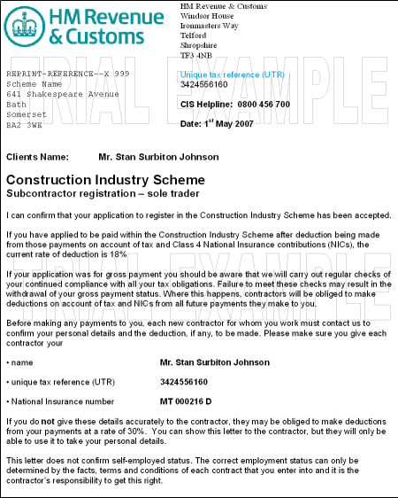

If an unregistered subcontractor registers with HMRC, they will receive from HRMC a CIS 313. When the subcontractor informs you that they are registered, create a new verification record for the subcontractor, and enter the Verification Status as New; then submit that record for verification in the normal way.
NOTE
Example
CIS 313 ? Notification of registration